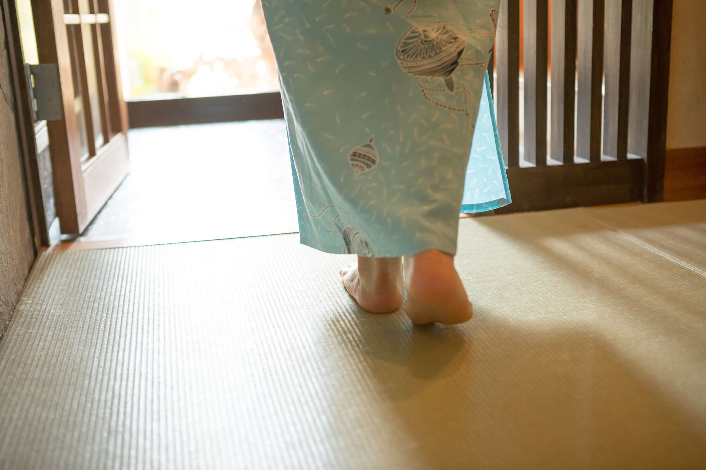

NHK电视剧（俗称早间剧）传递着日常生活中的兴奋、激动、欢笑等多种情感。 Mainichi ga Kasaku Net 正在推出一个系列，其中娱乐作家 Tayuki Wakako 谈论如何享受游戏和琐事技巧。本周的主题是“这个世界是悲伤的，但却是美好的”。你是怎么看的？
【上次】虽然我为土岐（高石明里饰）和他的朋友们的“善意的谎言”所感动，但我也很担心他。
*本文含有剧透。

在高石明里主演的早间剧《Bakebake》第4周中，“二人，Class，岛须贺？”，同名作品的口号“这个世界很无聊，但很精彩。”在第4周已经达到了里程碑。
丹（堤真一饰）死后，纺织厂破产。为了偿还债务，土希（高石饰）再次被迫成为女人。与此同时，她的女婿银次郎（宽一郎饰）独自一人，充满了紧迫感。
银次郎请收债人给他介绍工作，除了搬运货物和做副业外，他甚至开始在红灯区招揽顾客。然而松野家却有些固执，相反，兼卫门骂银次郎说：“我们家的地位被降低了”，“你受辱赚来的钱我一分钱都不要了”。
最后，银次郎留下一封信并逃跑了。在那里，土岐第一次意识到自己被宠坏了，并沮丧地哭了起来。然后，卖掉了所有盔甲和剑的金卫门把钱交给了土岐，并告诉了他从银次郎父亲那里得知的银次郎的地址，并让他去把他带回来。
他拜访的人是来自松江的才华横溢的锦织（吉泽亮饰）。据说银次郎是一名人力车夫。锦织在一场重要考试前感到沮丧，但他让土岐进入自己的房间，并给他治疗腿部受伤的药物。土岐因疲劳而睡着，醒来后发现帝国大学学生根岸（北野英树饰）和若宫（田中彻饰）在那里。两人说，银次郎被带进来是因为他即将死在帝代大学前。他还告诉我，他的室友锦织是松江最有才华的人之一，绰号“大番雀”。这是松江人聚集的寄宿处。
回到家的锦织加入了他们的行列，土岐讲述了他是如何来到东京的，而银次郎则回到了家。他因未经允许擅自离开家而向土岐道歉，土岐却因过于宽容而向松野一家和他自己道歉。
然而银次郎却表示东京有很多工作，并表示自己不会回到松野家，并邀请土岐一起住。土岐无法入睡，走到外面，发现锦织就在那里。锦织说东京是一个可以让他重新开始的地方，并问土岐是否不想重新开始。
与此同时，在松野家，富美（池胁千鹤饰）从泽（丸井饰）那里听说土岐得知他们没有血缘关系后感到不安，担心土岐不会回来。筱之介（冈部隆饰）表示自己很感激她养育了他，但他缺乏信心并提出带她回东京。然而，他说出的话语却是“我不仅会失去父亲，还会失去继承人”和“松野家族将会终结。”尽管他从小就因为自己的债务而强迫土岐工作，但筱介对他如何称土岐“仁慈”和“无情”感到震惊，并说出了听起来像“继承人”和“松野”的话家庭”比土岐更重要。此外，我对金卫门收养一个孩子并从头开始训练他的决定感到厌烦。然而，这些也是被时代抛在后面的松江前武士的价值观。
当兼卫门去向雨清水一家报告女婿离开、土岐去了东京的消息时，土岐的母亲多惠（北川景子饰）悲伤地说大家都离开了。然而，她记得希望有一个儿子的观右卫门如何微笑着将托基抱在怀里，当她放开托基时，她反思了他们和她的丈夫如何只希望托基幸福，她猜测观右卫门卖掉他珍贵的传家宝并让托基去找她丈夫的真实意图——他可能永远不会回来，但他仍然希望托基幸福——并说她很高兴她把他留给了托基的照顾。松野一家。然后，他宣布自己要离开松江。我很羡慕他高贵的表情和他身后仆人忙着收拾宅邸的样子。
锦织考试的那天。银次郎透露，锦织其实并不是帝国大学的学生，只是读过初级小学，出身贫寒，体弱多病，初中就辍学了，在没有任何资格的情况下当老师，所以来这里是为了考取初中教师资格。不过，如果你通过了所有科目，你就有资格从帝国大学毕业并成为校长。他是一个勤奋的人，来到东京“重新开始”。
银次郎上班后，土岐独自走在东京的街道上。当她迷茫着要抱起那个扶她摔倒的男人时，银次郎很快就坐着黄包车出现了，两人享受着短暂的“约会”。自从约好的见面后的第二次约会是那么的纯真、美丽、悲伤。
当锦织和他的朋友正田（滨翔吾饰）完成考试并举办派对时，土岐试图讲述一个鬼故事，但被锦织和正田拒绝。锦织说他不喜欢鬼故事，因为它们太老套了，正田也认为鬼神灵以及肉眼看不见的东西的时代已经结束，并表示日本现在还不到回顾过去的时候，从现在开始也不会再看西方。土岐可能对那些着眼于未来和希望（东京）而不是过去（松江）的人感到疏远。
为了照顾Toki，根岸第二天早上为她准备了英式早餐，向她展示西方的美好。当托奇用牛奶敬酒时，眼泪突然从微笑的脸上掉下来，嘴角长着白胡子。耀眼的朝阳照在托奇洁白的颈背上，面前一张张笑脸，欣喜的景象就像一只伸出的手，将托奇从黑暗中拯救出来。
然而，场面越是幸福，土岐的脑海中留下的松野一家和松江的形象就越是膨胀。土岐说他要回松江，含泪向银次郎道歉，然后告别。这是一个悲伤的场景，就像初恋的结束。
当土岐回到松江时，他听到屋外松野一家的笑声。每个人都在玩白胡子。当土岐报告说他独自一人回家并道歉时，一家人纠结地跑到彼此身边，看上去快要哭出来了，说：“够了！”一个人就够了！”（Kan'emon），“哟，你回来了！”（筱之助），“嗯，在家吗？”（Fumi）。这就是我无法离开松野家的原因。
如果兼卫门不卖传家宝，只关心家族地位的话。如果筱之助能将土岐视为继承人就好了。我希望福米只是因为焦虑而哭泣。托奇也许能够抛弃他们，走向更光明的未来。但松野一家最希望土岐幸福胜过一切，接受土岐缺席乃至松野一家灭亡的悲伤，仍然微笑着用牛奶制作白胡子。即使在困难时期，我也不能让他们独自一人，因为我知道他们微笑着、开朗。
而且，如果银次郎是一个冷酷无情的男人，他本可以怀着快乐的心继续前进，但不幸的是，他是一个充满爱心、善良、真正的好男人。我对这一切感到非常嫉妒。
顺便说一句，在历史事实中，土岐模特的第一任丈夫节（Setsu）逃到了大阪，而节（Setsu）显然是在认识了拉夫卡迪奥·赫恩（小泉八云饰）之后遇到了成为锦织圭模特的男人。然而，在剧中，土岐第一次在东京遇见锦织圭，并让他说“东京是一个可以重新开始的地方”和“你不想重新开始吗？”暗示还有另一种选择。此外，锦织对银次郎说：“照顾好你的妻子”，对土岐说：“那家伙是个好男人。”真是残酷、悲伤又可爱的一出戏。
这是因为，很明显，尽管土岐知道面前有一个“可以重新开始的未来”，但他仍然没有试图握住向他伸出的手。锦织知道土岐和银次郎彼此相爱，得知他们悲伤的离别，并目睹了他与未来伴侣的相遇。说实话，生活真的很无聊。但这太棒了。
下周，我们终于会看到托基如何遇见他命中注定的伴侣。我想关注松野一家在四个负债累累的人回归生活后会发生什么。
文/多由若子